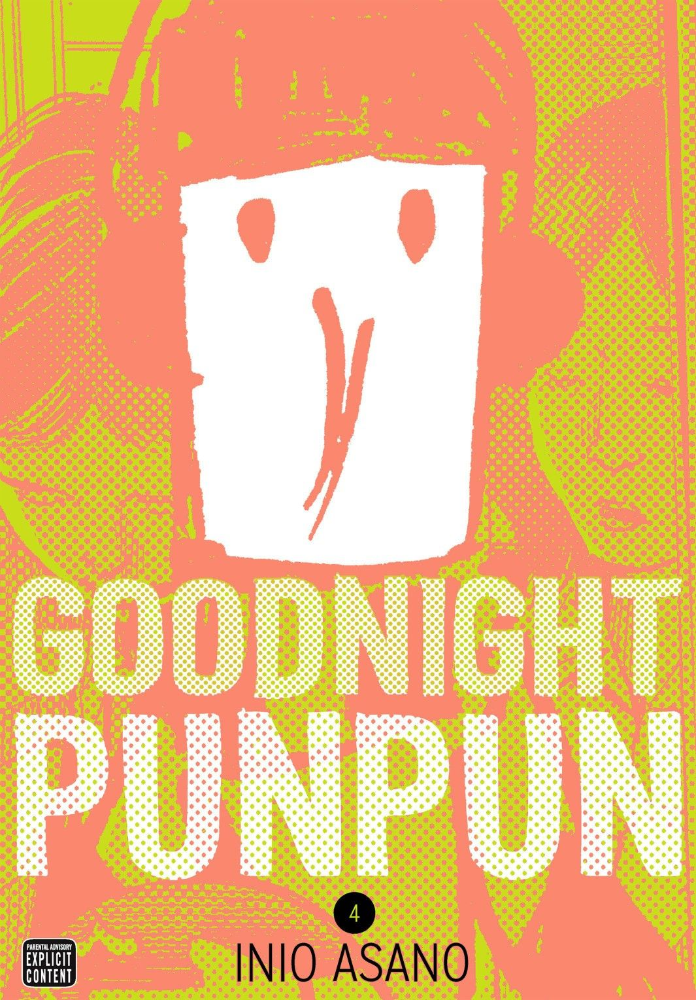

Oyasumi Punpun (おやすみ プンプン lit. Buenas noches, Punpun) es un manga japonés escrito e ilustrado por Inio Asano. La historia sigue a Onodera Punpun, un niño normal que debe hacer frente a sus amigos y familia disfuncional, su interés amoroso, su adolescencia en sentido contrario y su mente hiperactiva. Punpun es un niño que se ve a sí mismo y a toda su familia como un pájaro de caricatura mal dibujado, quien contrasta enormemente con sus amigos con el mundo en general, pues a parte de este y su familia, todo lo demás está increíblemente detallado, cada expresión de los personajes, cada mirada y cada encuadre es poderoso y te hace sentir que realmente son seres con sentimientos y no solo dibujos en papel.
'Oyasumi Punpun' es uno de esos manga que no debes juzgar por su portada, porque entonces lo dejarás donde lo has encontrado, te darás media vuelta y seguramente acabes llevándote algún Shonen de esos que luego alargan hasta más no poder. Y todo porque su portada era mejor. El manga de Inio Asano es puro arte. Desde la trama argumental hasta todas y cada una de las viñetas que componen los trece tomos de esta impresionante colección. Hacemos referencia a 'Oyasumi Punpun' como un manga novedoso, próximo y totalmente envolvente, Punpun tiende una mano al lector para entrar en su mundo y vivir su día a día, para hacerle conocedor de sus dudas, de sus inquietudes y sus logros a lo largo de esta etapa que compone su vida (entrada a la adolescencia hasta los veinte años). Pero tampoco quiero engañaros, probablemente este sea el manga más dramático que haya leído hasta el momento, no se equipara a los momentos duros en 'Bokurano' ni a ese final que nos da una lección a todos de 'Onani Master Kurosawa'